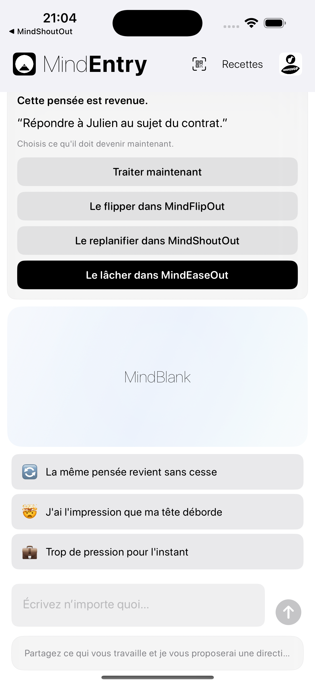
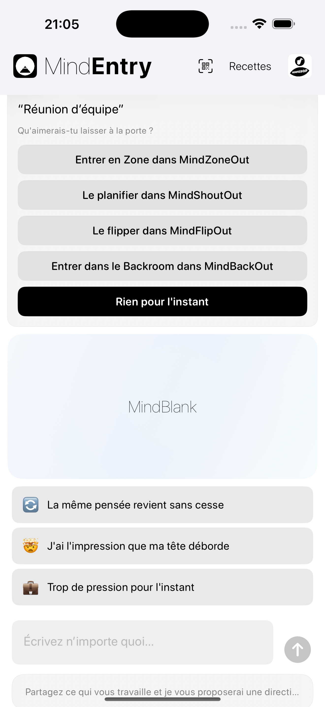

Une invitation discrète avant que la friction mentale ne s’installe.
MindPreCog est la couche contextuelle de MINDBEBOP.
Lorsqu’un rappel réapparaît, que la matinée commence, que l’heure du coucher approche, qu’une réunion va commencer, qu’une situation familière se présente, ou qu’un schéma récurrent commence à se former, MindPreCog remarque ces moments significatifs et ces motifs récurrents, puis propose la voie structurelle la plus adaptée.
Au lieu d’attendre que vous réalisiez que vous avez besoin d’aide, MindPreCog fait apparaître doucement le bon outil au bon moment.
Aucune analyse. Aucune interprétation. Aucun diagnostic. Juste une invitation opportune à réduire la friction mentale avant qu’elle ne s’accumule.
La plupart des applications attendent que vous demandiez de l’aide. MindPreCog propose une structure avant même que vous ne pensiez à la demander.
Ces moments deviennent de discrètes occasions de réagir différemment.
Des suggestions contextuelles, pas de lecture de pensées.
MindPreCog n’analyse pas vos pensées.
Il réagit simplement à des signaux tels que :
Lorsque l’un de ces moments se produit, MindEntry peut s’ouvrir et proposer l’étape suivante la plus pertinente.
Cela peut signifier Shouter une pensée, la Flipper, la reprogrammer, entrer dans Backroom, faire une session Zone, la Release, créer une recette, démarrer un CogniHack, ou simplement ne rien faire.
Le matin, MindEntry peut demander :
Qu’est-ce qui mérite votre attention aujourd’hui ?
Au moment du coucher, MindEntry peut demander :
Y a-t-il quelque chose que vous souhaitez mettre de côté pour demain ?
Avant une réunion, MindEntry peut demander :
Y a-t-il quelque chose que vous souhaitez laisser à la porte ?
Lorsqu’un même rappel a été reprogrammé plusieurs fois :
Ce rappel réapparaît régulièrement.
MindEntry peut alors proposer des options telles que MindShoutOut, MindFlipOut, MindZoneOut, MindBackOut, une recette, un CogniHack, ou simplement ne rien faire.
Une petite part de friction mentale est éliminée avant qu’elle n’ait le temps de grandir.
Une observation discrète, pas de l’analytique.
MindPreCog peut parfois remarquer qu’un rappel, une recette, une distraction, une situation ou un cheminement réapparaît de façon répétée au fil du temps.
Il peut s’agir d’un rappel qui réapparaît régulièrement, d’une recette utilisée encore et encore, d’une distraction récurrente, ou d’une séquence familière à travers plusieurs outils MINDBEBOP.
Aucun rapport n’est généré. Aucun score n’est calculé. Aucun comportement n’est évalué.
À la place, MindPreCog peut parfois afficher un message simple :
Ce schéma se répète.
L’objectif n’est pas l’analyse. L’objectif est d’aider les frictions récurrentes à trouver une structure avant qu’elles ne continuent à refaire surface.
MindPreCog remarque simplement les moments significatifs et les schémas récurrents, puis propose une structure lorsque cela peut être utile.


Les invitations MindPreCog sont affichées dans MindEntry.
Avec le temps, MindPreCog pourra s’étendre à d’autres invitations contextuelles et signaux de schéma.
La plupart des outils mentaux sont réactifs.
Vous remarquez un problème, puis décidez quoi faire.
MindPreCog réduit cet intervalle.
Il propose une option structurelle juste avant que la friction mentale n’ait le temps de grandir, et peut parfois remarquer des schémas récurrents avant qu’ils ne deviennent des sources persistantes de friction.
MindPreCog n’essaie pas de comprendre votre esprit. Il arrive simplement un peu plus tôt — et remarque parfois un schéma avant vous.
Copyright © 2026 MINDBEBOP — All rights reserved.